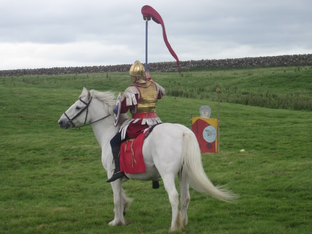

n°3 10x10個高達電影的片段
19x25.4cm｜62頁｜騎馬釘裝訂 ＿＿＿＿＿＿＿＿＿＿
10x10個高達2電影的片段 ￣￣￣￣￣￣￣￣￣￣
《小兵》:膜化的臉與不可能的男子氣概｜朱耘廷
汽車與激情,從《輕蔑》到《激情》｜于念平
關於高達,我所知道的兩、三隻手｜熊 芃 恨意充滿的週末｜許境洛
顏色作為一種思考方式｜林伊湄
高達啟示錄影像中,狗的存在與蒙太奇——
以《告別語言》與《影像之書》為例｜陳潔曜
《電影史》的蒙太奇迴聲｜馬曼容 高達電影中的表演初論｜何阿嵐
高達與時代歷史的批判｜Antoine de Baecque 著 尤俊弘 譯
法外的電影｜于昌民 ＿＿＿＿＿＿＿＿＿＿ 特稿
￣￣￣￣￣￣￣￣￣￣
媒介的特異性｜黃祥昀 難以定義的曹斐——可以觸碰的影像｜林冠亨
跨越時代的服裝引路人 Martin Margiela｜林永錫